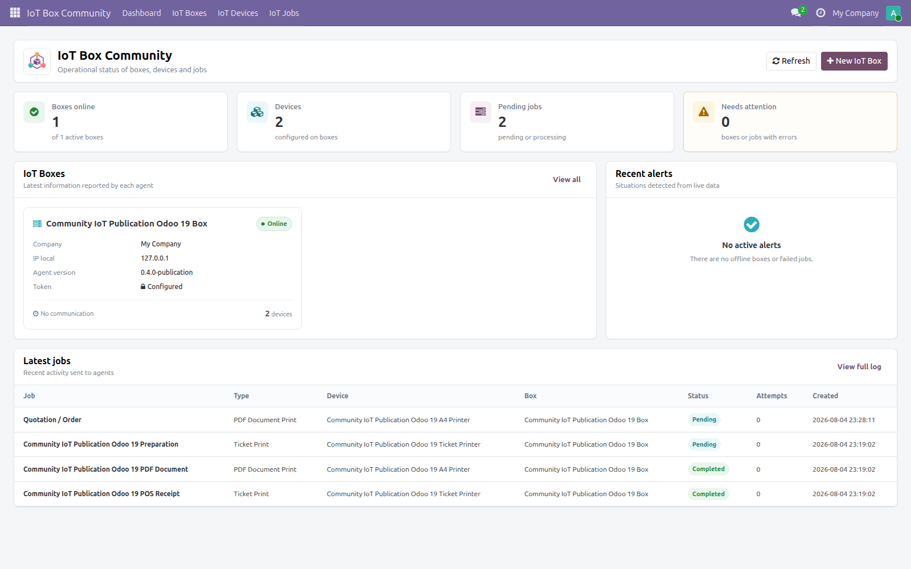
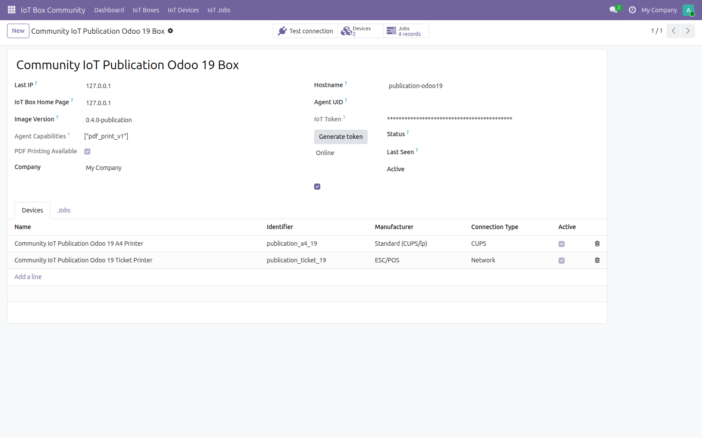
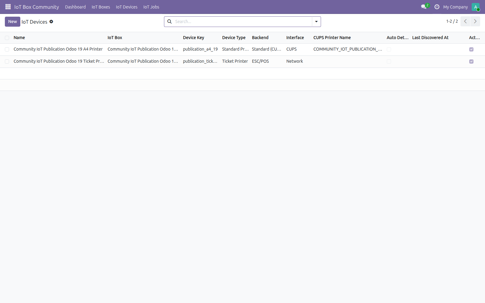
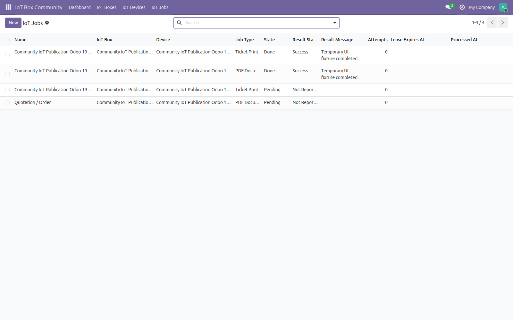

Manage boxes, devices, heartbeats and print jobs from Odoo Community while the separately installed local agent connects to the printers.
Create online boxes, register capabilities and review discovered peripherals.
Track pending, completed and failed work with attempts and result status.
Agent connection settings and secrets remain on the local host; the addon never bundles agent code.
The following images were captured from the current Odoo 19.0 branch in a temporary local database. They show the current menu, box configuration, devices and jobs screens.




Odoo 19 Community · Private Odoo.sh projects · On-premise deployments · Requires the Community IoT Agent.
Administre cajas IoT, dispositivos, latidos y trabajos de impresión desde Odoo Community 19. El agente local se instala por separado y conecta las impresoras del equipo.
Las capturas incluidas corresponden únicamente a la rama Odoo 19.0 y a una base temporal local con el código actual.